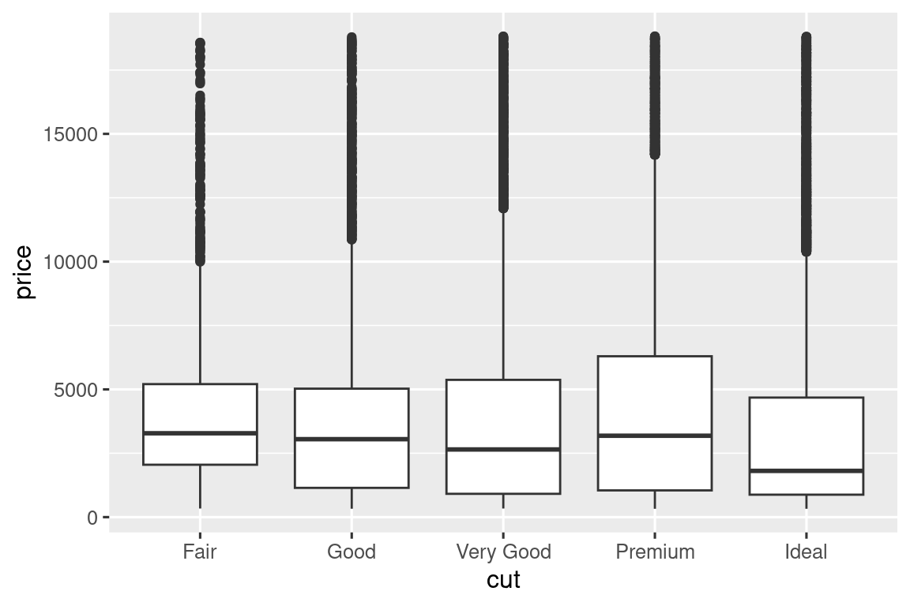
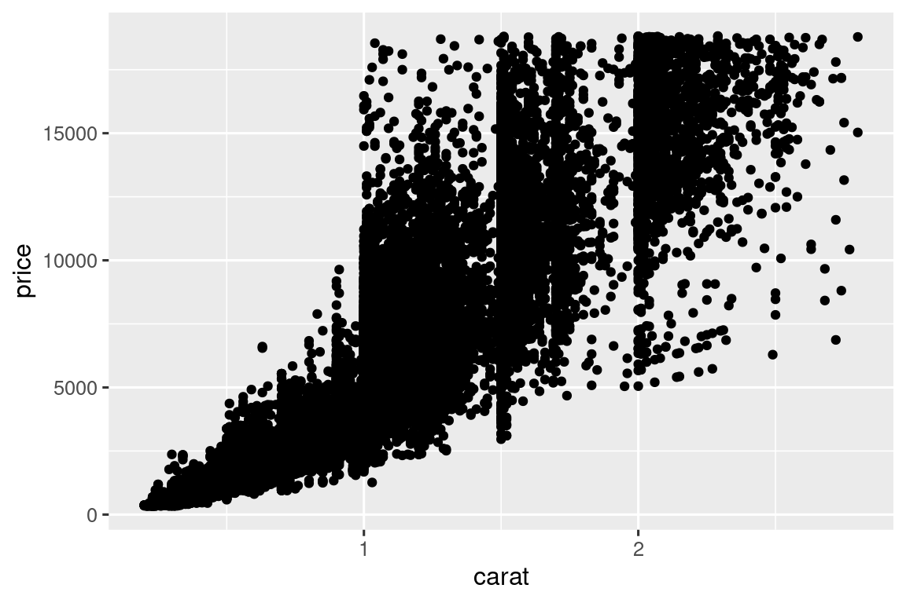
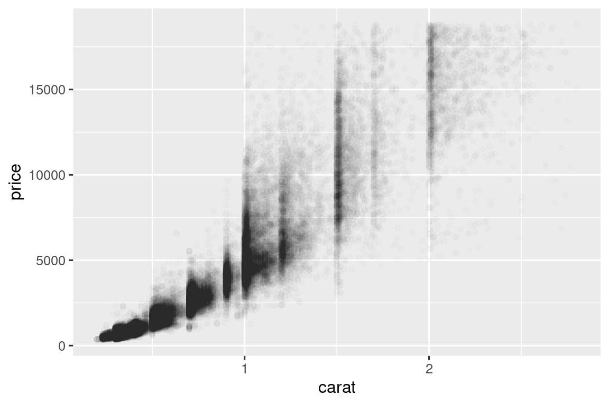

10 Διερευνητική ανάλυση δεδομένων
10.1 Εισαγωγή
Αυτό το κεφάλαιο θα σας δείξει πώς να χρησιμοποιήσετε οπτικοποιήσεις και μετασχηματισμούς για να εξερευνήσετε τα δεδομένα σας με έναν συστηματικό τρόπο, μία μεθοδολογία που οι στατιστικολόγοι αποκαλούν διερευνητική ανάλυση δεδομένων (exploratory data analysis, EDA) ή ΔΑΔ εν συντομία. Η ΔΑΔ είναι μία επαναληπτική κυκλική διαδικασία. Εσείς:
Δημιουργείτε ερωτήσεις σχετικά με τα δεδομένα σας.
Αναζητείτε απαντήσεις οπτικοποιώντας, μεταμορφώνοντας και μοντελοποιώντας τα δεδομένα σας.
Χρησιμοποιείτε όσα μαθαίνετε για να βελτιώσετε τις ερωτήσεις σας ή/και να δημιουργήσετε νέες ερωτήσεις.
Η ΔΑΔ δεν είναι μία επίσημη διαδικασία που αποτελείται από ένα αυστηρό σύνολο σχετικών κανόνων. Περισσότερο από οτιδήποτε άλλο, η ΔΑΔ είναι μία ιδεολογία. Κατά τις αρχικές φάσεις της ΔΑΔ θα πρέπει να αισθάνεστε ελεύθεροι να διερευνήσετε κάθε ιδέα σας. Μερικές από αυτές τις ιδέες θα αποδώσουν, και κάποιες θα οδηγήσουν σε αδιέξοδα. Καθώς η εξερεύνησή σας συνεχίζεται, θα κατευθυνθείτε μερικές ιδιαίτερα παραγωγικές πληροφορίες που τελικά θα καταγράψετε και θα επικοινωνήσετε σε άλλους.
Η ΔΑΔ είναι ένα σημαντικό μέρος οποιασδήποτε ανάλυσης δεδομένων, ακόμη και αν τα ερωτήματα της κύριας έρευνας σας παραδίδονται στο πιάτο, επειδή πρέπει πάντα να διερευνάτε την ποιότητα των δεδομένων σας. Ο καθαρισμός δεδομένων είναι μόνο μία εφαρμογή της ΔΑΔ: κάνετε ερωτήσεις σχετικά με το εάν τα δεδομένα σας ανταποκρίνονται στις προσδοκίες σας ή όχι. Για να κάνετε καθαρισμό δεδομένων, θα χρειαστεί να χρησιμοποιήσετε όλα τα εργαλεία της ΔΑΔ: οπτικοποίηση, μετασχηματισμό και μοντελοποίηση.
10.1.1 Προαπετούμενα
Σε αυτό το κεφάλαιο θα συνδυάσουμε ό,τι μάθατε για το πακέτο dplyr και το πακέτο ggplot2 για να κάνετε ερωτήσεις διαδραστικά, να τις απαντήσετε με δεδομένα και στη συνέχεια να κάνετε νέες ερωτήσεις.
10.2 Ερωτήματα
“Δεν υπάρχουν απλές στατιστικές ερωτήσεις, μόνο αμφισβητήσιμες στατιστικές διαδικασίες.” — Σερ Ντέιβιντ Κοξ
“Πολύ καλύτερη μία κατά προσέγγιση απάντηση στη σωστή ερώτηση, η οποία είναι συχνά ασαφής, παρά μία ακριβής απάντηση στη λάθος ερώτηση, η οποία μπορεί πάντα να είναι ακριβής.” — Τζον Τούκι
Ο στόχος σας κατά τη διάρκεια της ΔΑΔ είναι να κατανοήσετε τα δεδομένα σας. Ο ευκολότερος τρόπος για να το κάνετε αυτό είναι να χρησιμοποιήσετε ερωτήσεις ως εργαλεία για να καθοδηγήσετε την έρευνά σας. Όταν κάνετε μία ερώτηση, η ερώτηση εστιάζει την προσοχή σας σε ένα συγκεκριμένο μέρος του συνόλου δεδομένων και σας βοηθά να αποφασίσετε ποια γραφήματα, μοντέλα ή μετασχηματισμούς να κάνετε.
Η ΔΑΔ είναι κατά κύριο λόγο μία δημιουργική διαδικασία. Και όπως οι περισσότερες δημιουργικές διαδικασίες, το κλειδί για να κάνετε ερωτήσεις ποιότητας είναι να δημιουργήσετε μία μεγάλη ποσότητα ερωτήσεων. Είναι δύσκολο να κάνετε αποκαλυπτικές ερωτήσεις στην αρχή της ανάλυσής σας, επειδή δεν γνωρίζετε ποιες πληροφορίες μπορούν να εξαχθούν από το σύνολο δεδομένων σας. Από την άλλη πλευρά, κάθε νέα ερώτηση που κάνετε θα σας εκθέσει σε μία νέα πτυχή των δεδομένων σας και θα αυξήσει τις πιθανότητές σας να κάνετε μία ανακάλυψη. Μπορείτε να εμβαθύνετε γρήγορα στα πιο ενδιαφέροντα μέρη των δεδομένων σας — και να αναπτύξετε ένα σύνολο ερωτήσεων που προκαλούν σκέψη — εάν ακολουθείτε κάθε ερώτηση με μία νέα ερώτηση με βάση αυτό που βρίσκετε.
Δεν υπάρχει κανόνας σχετικά με τις ερωτήσεις που πρέπει να κάνετε για να καθοδηγήσετε την έρευνά σας. Ωστόσο, δύο τύποι ερωτήσεων θα είναι πάντα χρήσιμοι για την πραγματοποίηση ανακαλύψεων στα δεδομένα σας. Μπορείτε να διατυπώσετε χαλαρά αυτές τις ερωτήσεις ως:
Τι είδους παραλλαγή εμφανίζεται στις μεταβλητές μου;
Τι είδους συνδιακύμανση συμβαίνει μεταξύ των μεταβλητών μου;
Το υπόλοιπο αυτού του κεφαλαίου θα εξετάσει αυτές τις δύο ερωτήσεις. Θα εξηγήσουμε τι είναι η παραλλαγή και η συνδιακύμανση και θα σας δείξουμε αρκετούς τρόπους για να απαντήσετε σε κάθε ερώτηση.
10.3 Διακύμανση
Διακύμανση είναι η τάση προς αλλαγή των τιμών μιας μεταβλητής από μέτρηση σε μέτρηση. Μπορείτε να παρατηρήσετε την έννοια της διακύμανσης εύκολα στην πραγματική ζωή. Εάν μετρήσετε οποιαδήποτε συνεχής μεταβλητή δύο φορές, θα έχετε δύο διαφορετικά αποτελέσματα. Αυτό ισχύει ακόμη και αν μετράτε ποσότητες που είναι σταθερές, όπως η ταχύτητα του φωτός. Κάθε μία από τις μετρήσεις σας θα περιλαμβάνει μία μικρή ποσότητα σφάλματος που θα ποικίλλει από μέτρηση σε μέτρηση. Οι μεταβλητές μπορεί επίσης να διαφέρουν εάν μετράτε διαφορετικά υποκείμενα (π.χ. τα χρώματα των ματιών διαφορετικών ανθρώπων) ή διαφορετικές χρονικές στιγμές (π.χ. τα επίπεδα ενέργειας ενός ηλεκτρονίου σε διαφορετικές στιγμές). Κάθε μεταβλητή έχει το δικό της μοτίβο διακύμανσης, το οποίο μπορεί να αποκαλύψει ενδιαφέρουσες πληροφορίες σχετικά με το πώς ποικίλλει μεταξύ των μετρήσεων της ίδιας παρατήρησης καθώς και μεταξύ των παρατηρήσεων. Ο καλύτερος τρόπος για να κατανοήσετε αυτό το μοτίβο είναι να οπτικοποιήσετε την κατανομή των τιμών της μεταβλητής, για την οποία έχετε μάθει στο Κεφάλαιο 1.
Θα ξεκινήσουμε την εξερεύνηση μας με την απεικόνιση της κατανομής των βαρών (carat) των ~54.000 διαμαντιών από το σύνολο δεδομένων diamonds. Δεδομένου ότι η carat είναι μία αριθμητική μεταβλητή, μπορούμε να χρησιμοποιήσουμε ένα ιστόγραμμα:
ggplot(diamonds, aes(x = carat)) +
geom_histogram(binwidth = 0.5)
Τώρα που μπορείτε να απεικονίσετε τις διακυμάνσεις, τι πρέπει να αναζητήσετε στα διαγράμματά σας; Και τι είδους συμπληρωματικών ερωτήσεων πρέπει να κάνετε; Συγκεντρώσαμε παρακάτω μία λίστα με τους πιο χρήσιμους τύπους πληροφοριών που θα βρείτε στα γραφήματα σας, μαζί με μερικές συμπληρωματικές ερωτήσεις για κάθε τύπο πληροφορίας. Το κλειδί για να κάνετε καλές συμπληρωματικές ερωτήσεις θα είναι να βασιστείτε στην περιέργειά σας (Για τι θέλετε να μάθετε περισσότερα;) καθώς και στον σκεπτικισμό σας (Πώς θα μπορούσε αυτό να είναι παραπλανητικό;).
10.3.1 Τυπικές τιμές
Και στα δύο διαγράμματα ράβδων και τα ιστογράμματα, οι ψηλές ράβδοι δείχνουν τις κοινές τιμές μιας μεταβλητής και οι μικρότερες ράβδοι δείχνουν λιγότερο κοινές τιμές. Τα μέρη που δεν έχουν ράβδους αποκαλύπτουν τιμές που δεν παρατηρήθηκαν στα δεδομένα σας. Για να μετατρέψετε αυτές τις πληροφορίες σε χρήσιμες ερωτήσεις, αναζητήστε για οτιδήποτε απροσδόκητο:
Ποιες τιμές είναι οι πιο κοινές; Γιατί;
Ποιες τιμές είναι σπάνιες; Γιατί; Επαληθεύεται απο τις προσδοκίες σας;
Μπορείτε να δείτε κάποια ασυνήθιστα μοτίβα; Τι μπορεί να τα εξηγήσει;
Ας ρίξουμε μία ματιά στη κατανομή της carat για μικρότερα διαμάντια.
smaller <- diamonds |>
filter(carat < 3)
ggplot(smaller, aes(x = carat)) +
geom_histogram(binwidth = 0.01)Αυτό το ιστόγραμμα αναδεικνύει αρκετές ενδιαφέρουσες ερωτήσεις:
Γιατί υπάρχουν περισσότερα διαμάντια σε ολόκληρα καράτια και κοινά μέρη καρατιών;
Γιατί υπάρχουν περισσότερα διαμάντια ελαφρώς στα δεξιά κάθε κορυφής από ότι ελαφρώς στα αριστερά κάθε κορυφής;
Οι απεικονίσεις μπορούν επίσης να αποκαλύψουν συστάδες, γεγονός που υποδηλώνει ότι υπάρχουν υπο-ομάδες στα δεδομένα σας. Για να κατανοήσετε τις υπο-ομάδες, ρωτήστε:
Πώς είναι οι παρατηρήσεις σε κάθε υποομάδα παρόμοια μεταξύ τους;
Πώς διαφέρουν οι παρατηρήσεις σε ξεχωριστές συστάδες μεταξύ τους;
Πώς μπορείτε να εξηγήσετε ή να περιγράψετε τις συστάδες;
Γιατί μπορεί η εμφάνιση των συστάδων να είναι παραπλανητική;
Ορισμένες από αυτές τις ερωτήσεις μπορούν να απαντηθούν με τα δεδομένα, ενώ ορισμένες απαιτούν εξειδίκευση στον τομέα σχετική με τα δεδομένα. Πολλά από αυτά θα σας προτρέψουν να εξερευνήσετε μία σχέση μεταξύ μεταβλητών, για παράδειγμα, για να δείτε εάν οι τιμές μιας μεταβλητής μπορούν να εξηγήσουν τη συμπεριφορά μιας άλλης μεταβλητής. Θα φτάσουμε σε αυτό σύντομα.
10.3.2 Ασυνήθιστες τιμές
Οι ακραίες τιμές είναι παρατηρήσεις που είναι ασυνήθιστες. Είναι δηλαδή σημεία δεδομένων που δεν φαίνεται να ταιριάζουν στο μοτίβο. Μερικές φορές οι ακραίες τιμές είναι σφάλματα της εισαγωγής δεδομένων, μερικές φορές είναι απλώς μεγάλες τιμές που έτυχε να παρατηρηθούν σε αυτήν τη συλλογή δεδομένων και άλλες φορές προτείνουν σημαντικές νέες ανακαλύψεις. Όταν έχετε πολλά δεδομένα, οι ακραίες τιμές είναι μερικές φορές δύσκολο να φανούν σε ένα ιστόγραμμα. Για παράδειγμα, πάρτε την κατανομή της μεταβλητής y από το σύνολο δεδομένων diamonds. Η μόνη απόδειξη των ακραίων τιμών είναι τα ασυνήθιστα μεγάλα όρια στον άξονα x.
ggplot(diamonds, aes(x = y)) +
geom_histogram(binwidth = 0.5)Υπάρχουν πολλές παρατηρήσεις στις κοινές κατηγορίες που οι σπάνιες κατηγορίες είναι πολύ μικρές, με αποτέλεσμα να είναι πολύ δύσκολο να τις δεις (αν και ίσως κοιτάξεις επίμονα το 0 θα εντοπίσεις κάτι). Για να είναι εύκολο να δούμε τις ασυνήθιστες τιμές, πρέπει να μεγεθύνουμε στις μικρές τιμές του άξονα y με το coord_cartesian():
ggplot(diamonds, aes(x = y)) +
geom_histogram(binwidth = 0.5) +
coord_cartesian(ylim = c(0, 50))Το coord_cartesian() έχει επίσης ένα όρισμα xlim() για την περίπτωση που πρέπει να μεγεθύνετε στον άξονα x. Η ggplot2 έχει και αυτή συναρτήσεις xlim() και ylim() που λειτουργούν λίγο διαφορετικά: πετούν τα δεδομένα έξω από τα όρια.
Αυτό μας επιτρέπει να δούμε ότι υπάρχουν τρεις ασυνήθιστες τιμές: 0, ~30 και ~60. Τα βγάζουμε εκτός με το πακέτο dplyr:
unusual <- diamonds |>
filter(y < 3 | y > 20) |>
select(price, x, y, z) |>
arrange(y)
unusual
#> # A tibble: 9 × 4
#> price x y z
#> <int> <dbl> <dbl> <dbl>
#> 1 5139 0 0 0
#> 2 6381 0 0 0
#> 3 12800 0 0 0
#> 4 15686 0 0 0
#> 5 18034 0 0 0
#> 6 2130 0 0 0
#> 7 2130 0 0 0
#> 8 2075 5.15 31.8 5.12
#> 9 12210 8.09 58.9 8.06Η μεταβλητή y μετρά μία από τις τρεις διαστάσεις αυτών των διαμαντιών, σε mm. Γνωρίζουμε ότι τα διαμάντια δεν μπορούν να έχουν πλάτος 0mm, επομένως αυτές οι τιμές πρέπει να είναι λανθασμένες. Εφαρμόζοντας ΑΔΑ, ανακαλύψαμε δεδομένα που λείπουν και κωδικοποιήθηκαν ως 0, τα οποία δεν θα βρίσκαμε ποτέ κάνοντας απλή αναζήτηση για τιμές NA. Στο εξής, ενδέχεται να επιλέξουμε να κωδικοποιήσουμε εκ νέου αυτές τις τιμές ως NA για να αποτρέψουμε παραπλανητικούς υπολογισμούς. Μπορεί επίσης να υποψιαζόμαστε ότι οι μετρήσεις των 32mm και 59mm είναι απίθανες: τα διαμάντια αυτά έχουν μήκος πάνω από μία ίντσα, αλλά δεν κοστίζουν εκατοντάδες χιλιάδες δολάρια!
Είναι καλή πρακτική να επαναλαμβάνετε την ανάλυσή σας με και χωρίς τις ακραίες τιμές. Σε περίπτωση που έχουν ελάχιστη επίδραση στα αποτελέσματα και δεν μπορείτε να καταλάβετε γιατί είναι εκεί, είναι λογικό να τις παραλείψετε και να προχωρήσετε. Ωστόσο, εάν έχουν ουσιαστική επίδραση στα αποτελέσματά σας, δεν πρέπει να τις απορρίψετε χωρίς αιτιολόγηση. Θα πρέπει να καταλάβετε τι τις προκάλεσε (π.χ. ένα σφάλμα εισαγωγής δεδομένων) και να ενημερώσετε ότι τις καταργήσατε.
10.3.3 Ασκήσεις
Εξερευνήστε την κατανομή καθεμιάς από τις μεταβλητές
x,yκαιzστοdiamonds. Τι μαθαίνετε? Φέρτε στη φαντασία σας ένα διαμάντι και πώς μπορείτε να αποφασίσετε ποια διάσταση είναι το μήκος, το πλάτος και το βάθος.Εξερευνήστε την κατανομή της
price. Ανακαλύπτετε κάτι ασυνήθιστο ή αναπάντεχο; (Συμβουλή: Δώστε προσοχή τον ορισμό της μεταβλητήςbinwidthκαι βεβαιωθείτε ότι έχετε δοκιμάσει ένα ευρύ φάσμα τιμών.)Πόσα διαμάντια είναι 0,99 καρατίων; Πόσα είναι 1 καράτι; Ποια πιστεύετε ότι είναι η αιτία της διαφοράς;
Συγκρίνετε και αντιπαραβάλλετε τη
coord_cartesian()με τηxlim()ή τηylim()όταν μεγεθύνετε σε ένα ιστόγραμμα. Τι θα συμβεί δεν χρησιμοποιήσετε τηbinwidth; Τι θα συμβεί εάν προσπαθήσετε να κάνετε μεγέθυνση ώστε να εμφανίζεται μόνο μισή μπάρα;
10.4 Ασυνήθιστες τιμές
Εάν έχετε συναντήσει ασυνήθιστες τιμές στο σύνολο δεδομένων σας και θέλετε απλώς να προχωρήσετε στην υπόλοιπη ανάλυσή σας, έχετε δύο επιλογές.
- Αφαιρέστε ολόκληρη τη σειρά που περιέχει ασυνήθιστες τιμές:
Δεν συνιστούμε αυτήν την επιλογή επειδή μία μη έγκυρη τιμή δεν σημαίνει ότι όλες οι άλλες τιμές για αυτήν την παρατήρηση δεν είναι επίσης έγκυρες. Επιπλέον, εάν η ποιότητα των δεδομένων σας δεν είναι καλή, από τη στιγμή που θα έχετε εφαρμόσει αυτήν την προσέγγιση σε κάθε μεταβλητή, ενδέχεται να διαπιστώσετε ότι δεν σας έχουν απομείνει δεδομένα!
- Αντίθετα, συνιστούμε να αντικαταστήσετε τις ασυνήθιστες τιμές με κενές τιμές. Ο ευκολότερος τρόπος για να γίνει αυτό είναι να χρησιμοποιήσετε τη
mutate()για να αντικαταστήσετε τη μεταβλητή με ένα τροποποιημένο αντίγραφο. Μπορείτε να χρησιμοποιήσετε τη συνάρτησηif_else()για να αντικαταστήσετε ασυνήθιστες τιμές μεNA:
Το που θα απεικονισθούν οι κενές τιμές δεν είναι προφανές, επομένως το πακέτο ggplot2 δεν τις περιλαμβάνει στο διάγραμμα, αλλά προειδοποιεί ότι έχουν αφαιρεθεί:
ggplot(diamonds2, aes(x = x, y = y)) +
geom_point()
#> Warning: Removed 9 rows containing missing values or values outside the scale range
#> (`geom_point()`).Για να μην τυπωθεί η προειδοποίηση, ορίστε na.rm = TRUE:
ggplot(diamonds2, aes(x = x, y = y)) +
geom_point(na.rm = TRUE)Άλλες φορές, θέλετε να καταλάβετε τι κάνει τις παρατηρήσεις με τιμές που λείπουν διαφορετικές από τις παρατηρήσεις με καταγεγραμμένες τιμές. Για παράδειγμα, στο nycflights13::flights1, οι κενές τιμές της μεταβλητής dep_time υποδηλώνουν ότι η πτήση ακυρώθηκε. Επομένως, ίσως θέλετε να συγκρίνετε τις προγραμματισμένες ώρες αναχώρησης για ακυρωμένες και μη ακυρωμένες ώρες. Αυτό μπορείτε να το κάνετε δημιουργώντας μία νέα μεταβλητή, χρησιμοποιώντας την is.na() για να ελέγξετε αν η dep_time λείπει.
nycflights13::flights |>
mutate(
cancelled = is.na(dep_time),
sched_hour = sched_dep_time %/% 100,
sched_min = sched_dep_time %% 100,
sched_dep_time = sched_hour + (sched_min / 60)
) |>
ggplot(aes(x = sched_dep_time)) +
geom_freqpoly(aes(color = cancelled), binwidth = 1/4)
Ωστόσο, αυτή το διάγραμμα δεν είναι καλό, επειδή υπάρχουν πολύ περισσότερες μη ακυρωμένες πτήσεις από ακυρωμένες πτήσεις. Στην επόμενη ενότητα θα διερευνήσουμε ορισμένες τεχνικές για τη βελτίωση αυτής της σύγκρισης.
10.4.1 Ασκήσεις
Τι συμβαίνει με τις κενές τιμές σε ένα ιστόγραμμα; Τι συμβαίνει με τις κενές τιμές σε ένα ραβδόγραμμα; Γιατί υπάρχει διαφορά στον τρόπο χειρισμού των ελλιπών τιμών στα ιστογράμματα και στα ραβδογράμματα;
Δημιουργήστε ξανά το διάγραμμα συχνότητας του
scheduled_dep_timeχρωματισμένο ανάλογα με το αν η πτήση ακυρώθηκε ή όχι. Επίσης, δημιουργήστε όψεις χρησιμοποιώντας τη μεταβλητήcancelled. Πειραματιστείτε με διαφορετικές τιμές της μεταβλητήςscalesστη συνάρτηση όψεων για να μετριαστεί η επίδραση περισσότερων μη ακυρωμένων πτήσεων από ακυρωμένες πτήσεις.
10.5 Συνδιακύμανση
Εάν η διακύμανση περιγράφει τη συμπεριφορά εντός μιας μεταβλητής, η συνδιακύμανση περιγράφει τη συμπεριφορά μεταξύ μεταβλητών. Συνδιακύμανση είναι η τάση οι τιμές δύο ή περισσότερων μεταβλητών να ποικίλλουν μαζί με σχετικό τρόπο. Ο καλύτερος τρόπος για να εντοπίσετε τη συνδιακύμανση είναι να απεικονίσετε τη σχέση μεταξύ δύο ή περισσότερων μεταβλητών.
10.5.1 Μία κατηγορική και μία αριθμητική μεταβλητή
Για παράδειγμα, ας εξερευνήσουμε πώς η τιμή ενός διαμαντιού ποικίλλει ανάλογα με την ποιότητά του (μετρούμενη από την cut) χρησιμοποιώντας τη geom_freqpoly():
ggplot(diamonds, aes(x = price)) +
geom_freqpoly(aes(color = cut), binwidth = 500, linewidth = 0.75)Σημειώστε ότι το πακέτο ggplot2 χρησιμοποιεί μία διατεταγμένη χρωματική κλίμακα για τη cut επειδή ορίζεται ως μία διατεταγμένη παραγοντική μεταβλητή (ordered factor variable) στα δεδομένα. Θα μάθετε περισσότερα για αυτά στην Ενότητα 16.6.
Η προεπιλεγμένη ρύθμιση της geom_freqpoly() δεν είναι τόσο χρήσιμη εδώ επειδή το ύψος, που καθορίζεται από το συνολικό πλήθος, διαφέρει πολύ μεταξύ των τιμών της cut, καθιστώντας δύσκολο να δούμε τις διαφορές στα σχήματα των κατανομών τους.
Για να κάνουμε τη σύγκριση πιο εύκολη, πρέπει να μεταφέρουμε αυτό που εμφανίζεται στον άξονα y. Αντί να εμφανίσουμε το πλήθος, θα εμφανίσουμε την πυκνότητα, η οποία είναι το τυποποιήμενο πλήθος έτσι ώστε η περιοχή κάτω από κάθε πολύγωνο συχνότητας να είναι ένα.
ggplot(diamonds, aes(x = price, y = after_stat(density))) +
geom_freqpoly(aes(color = cut), binwidth = 500, linewidth = 0.75)![Ένα πολύγωνο συχνότητας των πυκνοτήτων των τιμών των διαμαντιών όπου κάθε κοπή καρατιού (Fair, Good, Very Good, Premium και Ideal) αναπαρίσταται με διαφορετική χρωματική γραμμή. Ο άξονας x κυμαίνεται από 0 έως 20000. Οι γραμμές επικαλύπτονται σε μεγάλο βαθμό, υποδηλώνοντας παρόμοιες κατανομές πυκνότητας των τιμών των διαμαντιών. Ένα αξιοσημείωτο χαρακτηριστικό είναι ότι όλα εκτός από τα Fair διαμάντια έχουν υψηλές κορυφές γύρω στην τιμή των 1500 και τα Fair διαμάντια έχουν υψηλότερο μέσο όρο από άλλα.](EDA_files/figure-html/unnamed-chunk-16-1.png)
Σημειώστε ότι αντιστοιχίζουμε την πυκνότητα με την y, αλλά επειδή η πυκνότητα δεν είναι μεταβλητή στο σύνολο δεδομένων diamonds, πρέπει πρώτα να την υπολογίσουμε. Για να το κάνουμε αυτό χρησιμοποιούμε τη λειτουργία after_stat().
Υπάρχει κάτι μάλλον εκπληκτικό σε αυτό το διάγραμμα - φαίνεται ότι τα διαμάντια με ικανοποιητικό κόψιμο (η χαμηλότερη ποιότητα) έχουν την υψηλότερη μέση τιμή! Αλλά ίσως αυτό συμβαίνει επειδή τα πολύγωνα συχνότητας είναι λίγο δύσκολο να ερμηνευτούν - υπάρχουν πολλά που συμβαίνουν σε αυτό το διάγραμμα.
Ένα οπτικά απλούστερο διάγραμμα για την εξερεύνηση αυτής της σχέσης είναι η χρήση θηκογραμμάτων το ένα δίπλα στο άλλο.
ggplot(diamonds, aes(x = cut, y = price)) +
geom_boxplot()
Βλέπουμε πολύ λιγότερες πληροφορίες σχετικά με τη κατανομή, αλλά τα θηκογράμματα είναι πολύ πιο συμπαγή, ώστε να μπορούμε να τα συγκρίνουμε πιο εύκολα (και να χωρέσουν περισσότερα σε ένα διάγραμμα). Υποστηρίζει το μη αναμενόμενο εύρημα ότι τα διαμάντια καλύτερης ποιότητας είναι συνήθως φθηνότερα! Στις ασκήσεις, θα κληθείτε να καταλάβετε το γιατί.
Η μεταβλητή cut είναι μία διατεταγμένη παραγοντική μεταβλητή: το ικανοποιητικό κόψιμο είναι χειρότερο από το καλό, το οποίο είναι χειρότερο από το πολύ καλό και ούτω καθεξής. Αρκετές κατηγορικές μεταβλητές δεν έχουν τέτοια εγγενή διάταξη, επομένως ίσως θελήσετε να τις αναδιατάξετε για να δημιουργήσετε μία πιο κατατοπιστική οπτική. Ένας τρόπος για να γίνει αυτό είναι με τη fct_reorder(). Θα μάθετε περισσότερα για αυτήν τη συνάρτηση στην Ενότητα 16.4, αλλά θέλουμε να σας δώσουμε μία γρήγορη προεπισκόπηση εδώ καθώς είναι αρκετά χρήσιμη. Για παράδειγμα, πάρτε τη μεταβλητή class από το σύνολο δεδομένων mpg. Μπορεί να σας ενδιαφέρει να μάθετε πώς διαφέρει η χιλιομετρική απόσταση σε αυτοκινητόδρομο μεταξύ κατηγοριών αυτοκινήτων:
ggplot(mpg, aes(x = class, y = hwy)) +
geom_boxplot()Για να γίνει πιο ευδιάκριτη η τάση, μπορούμε να αναδιατάξουμε τη μεταβλητή class με βάση τη διάμεση τιμή της hwy:
ggplot(mpg, aes(x = fct_reorder(class, hwy, median), y = hwy)) +
geom_boxplot()
Εάν έχετε ονόματα μεταβλητών με μεγάλο αριθμό χαρακτήρων, η geom_boxplot() θα λειτουργήσει καλύτερα αν τα στρέψετε κατά 90°. Μπορείτε να το εφαρμόσετε αλλάζοντας τις αισθητικές αντιστοιχίσεις x και y.
ggplot(mpg, aes(x = hwy, y = fct_reorder(class, hwy, median))) +
geom_boxplot()10.5.1.1 Ασκήσεις
Χρησιμοποιήστε όσα έχετε μάθει για να βελτιώσετε την οπτικοποίηση των ωρών αναχώρησης ακυρωμένων έναντι μη ακυρωμένων πτήσεων.
Με βάση την ΑΔΑ, ποια μεταβλητή στο σύνολο δεδομένων diamonds φαίνεται να είναι πιο σημαντική για την πρόβλεψη της τιμής ενός διαμαντιού; Πώς συσχετίζεται αυτή η μεταβλητή με τη cut; Γιατί ο συνδυασμός αυτών των δύο σχέσεων οδηγεί στο συμπέρασμα ότι είναι πιο ακριβά τα διαμάντια χαμηλότερης ποιότητας;
Αντί να αλλάξετε τις μεταβλητές x και y μεταξύ τους, προσθέστε τη
coord_flip()ως νέο επίπεδο στο κατακόρυφο θηκόγραμμα για να δημιουργήσετε ένα οριζόντιο. Πώς συγκρίνεται αυτό με την ανταλλαγή των μεταβλητών;Ένα πρόβλημα με τα θηκογράμματα είναι ότι αναπτύχθηκαν σε μία εποχή πολύ μικρότερων συνόλων δεδομένων και τείνουν να εμφανίζουν έναν απαγορευτικά μεγάλο αριθμό “ακραίων τιμών”. Μία προσέγγιση για την επίλυση αυτού του προβλήματος είναι η γραφική παράσταση τιμής γράμματος. Εγκαταστήστε το πακέτο lvplot και δοκιμάστε να χρησιμοποιήσετε τη
geom_lv()για να εμφανίσετε την κατανομή της μεταβλητής price έναντι της cut. Τι μαθαίνετε? Πώς ερμηνεύετε τα διαγράμματα;Δημιουργήστε μία απεικόνιση των τιμών των διαμαντιών έναντι μιας κατηγορηματικής μεταβλητής από το σύνολο δεδομένων
diamondsχρησιμοποιώντας τηgeom_violin(), στη συνέχεια ένα ιστόγραμμα με όψεις χρησιμοποιώντας τηgeom_histogram(), έπειτα ένα πολύγωνο συχνότητας με χρωματισμό χρησιμοποιώντας τηgeom_freqpoly(), και στη συνέχεια μία απεικόνιση πυκνότητας με χρωματισμό χρησιμοποιώντας τηgeom_densy(). Συγκρίνετε και αντιπαραβάλλετε τα τέσσερα διαγράμματα. Ποια είναι τα πλεονεκτήματα και τα μειονεκτήματα κάθε μεθόδου οπτικοποίησης της κατανομής μιας αριθμητικής μεταβλητής με βάση τα επίπεδα μιας κατηγορικής μεταβλητής;Εάν έχετε ένα μικρό σύνολο δεδομένων, είναι μερικές φορές χρήσιμο να χρησιμοποιήσετε τη
geom_jitter()για να αποφύγετε την οπτικοποίηση πολλαπλών στοιχείων έτσι ώστε η σχέση μεταξύ μιας συνεχούς και κατηγορικής μεταβλητής να είναι πιο εύκολα αντιληπτή. Το πακέτο ggbeeswarm παρέχει έναν αριθμό μεθόδων παρόμοιων με τηgeom_jitter(). Καταγράψτε τα και περιγράψτε εν συντομία τι κάνει το καθένα.
10.5.2 Δύο κατηγορικές μεταβλητές
Για να απεικονίσετε τη συνδιακύμανση μεταξύ κατηγορικών μεταβλητών, θα χρειαστεί να μετρήσετε τον αριθμό των παρατηρήσεων για κάθε συνδυασμό επιπέδων αυτών των κατηγορικών μεταβλητών. Ένας τρόπος για να το κάνετε αυτό είναι να βασιστείτε στην ενσωματωμένη συνάρτηση geom_count():
ggplot(diamonds, aes(x = cut, y = color)) +
geom_count()Το μέγεθος κάθε κύκλου στο διάγραμμα δείχνει πόσες παρατηρήσεις υπάρχουν για κάθε συνδυασμό τιμών. Η συνδιακύμανση θα εμφανιστεί ως ισχυρή συσχέτιση μεταξύ συγκεκριμένων τιμών x και συγκεκριμένων τιμών y.
Ένας άλλος τρόπος για τη διερεύνηση της σχέσης μεταξύ αυτών των μεταβλητών είναι ο υπολογισμός των μετρήσεων με το πακέτο dplyr:
diamonds |>
count(color, cut)
#> # A tibble: 35 × 3
#> color cut n
#> <ord> <ord> <int>
#> 1 D Fair 163
#> 2 D Good 662
#> 3 D Very Good 1513
#> 4 D Premium 1603
#> 5 D Ideal 2834
#> 6 E Fair 224
#> # ℹ 29 more rowsΣτη συνέχεια, οπτικοποιήστε με τη geom_tile() και το αισθητικό στοιχείο fill:
Εάν οι κατηγορικές μεταβλητές δεν είναι ταξινομημένες, μπορείτε να χρησιμοποιήσετε το πακέτο seriation για να αναδιατάξετε τις γραμμές και τις στήλες, προκειμένου να αποκαλύψετε ακόμα πιο ξεκάθαρα ενδιαφέροντα μοτίβα. Για μεγαλύτερα διαγράμματα, μπορείτε να δοκιμάσετε το πακέτο heatmaply, για διαδραστικά διαγράμματα.
10.5.2.1 Ασκήσεις
Πώς θα μπορούσατε να αναδιαμορφώσετε το σύνολο δεδομένων πλήθους παραπάνω για να δείξετε με μεγαλύτερη σαφήνεια την κατανομή της κοπής ανά χρώμα ή του χρώματος ανά κοπή;
Ποιες διαφορετικές πληροφορίες λαμβάνετε για τα δεδομένα με ένα τμηματοποιημένο ραβδόγραμμα εάν το χρώμα αντιστοιχιστεί στο αισθητικό στοιχείο
xκαι ηcutαντιστοιχιστεί στο αισθητικό στοιχείοfill; Υπολογίστε τις μετρήσεις που εμπίπτουν σε καθένα από τα τμήματα.Χρησιμοποιήστε τη
geom_tile()μαζί με το πακέτο dplyr για να εξερευνήσετε πώς διαφέρουν οι μέσες καθυστερήσεις αναχώρησης πτήσεων ανά προορισμό και μήνα του έτους. Τι δυσκολεύει την ανάγνωση του διαγράμματος; Πώς θα μπορούσατε να το βελτιώσετε;
10.5.3 Δύο αριθμητικές μεταβλητές
Έχετε ήδη δει έναν εξαιρετικό τρόπο οπτικοποίησης της συνδιακύμανσης μεταξύ δύο αριθμητικών μεταβλητών: σχεδιάστε ένα διάγραμμα διασποράς με τη geom_point(). Μπορείτε να ερμηνεύσετε τη συνδιακύμανση ως το μοτίβο στα σημεία. Για παράδειγμα, μπορείτε να δείτε μία θετική σχέση μεταξύ του μεγέθους των καρατίων και της τιμής ενός διαμαντιού: τα διαμάντια με περισσότερα καράτια έχουν υψηλότερη τιμή. Η σχέση αυτή είναι εκθετική.
ggplot(smaller, aes(x = carat, y = price)) +
geom_point()
(Σε αυτήν την ενότητα θα χρησιμοποιήσουμε το σύνολο δεδομένων smaller για να παραμείνουμε εστιασμένοι στο μέρος των διαμαντιών που είναι μικρότερα από 3 καράτια)
Τα διαγράμματα διασποράς γίνονται λιγότερο χρήσιμα καθώς αυξάνεται το μέγεθος του συνόλου δεδομένων σας, επειδή τα σημεία αρχίζουν να συσσωρεύονται και να δημιουργούν περιοχές με μαύρο χρώμα. Έτσι, καθίσταται δύσκολη η ικανότητά μας στην αντίληψη των διαφορών στην πυκνότητα των δεδομένων στις 2 διαστάσεις καθώς ακόμα και ο εντοπισμός τάσεων. Έχετε ήδη δει έναν τρόπο για να διορθώσετε το πρόβλημα: να χρησιμοποιήσετε το αισθητικό στοιχείο alpha έτσι ώστε να προσθέσετε διαφάνεια.
ggplot(smaller, aes(x = carat, y = price)) +
geom_point(alpha = 1 / 100)
Η χρήση της διαφάνειας, όμως, μπορεί να είναι δύσκολη για πολύ μεγάλα σύνολα δεδομένων. Μία άλλη λύση είναι η χρήση πλαισίων με σκοπό την κατηγοριοποίηση (ή ομαδοποίηση). Προηγουμένως χρησιμοποιούσατε τις geom_histogram() και geom_freqpoly() για να κατηγοριοποιήσετε σε μία διάσταση. Τώρα θα μάθετε πώς να χρησιμοποιείτε τη geom_bin2d() και τη geom_hex() για να κατηγοριοποιήσετε σε δύο διαστάσεις.
Οι geom_bin2d() και geom_hex() διαιρούν το επίπεδο συντεταγμένων σε πλαίσια δύο διαστάσεων και στη συνέχεια χρησιμοποιούν αντίστοιχα χρώματα για να εμφανίσουν πόσα σημεία ανήκουν σε κάθε πλαίσιο. Η geom_bin2d() δημιουργεί ορθογώνια πλαίσια. Η geom_hex() δημιουργεί εξάγωνα πλαίσια. Θα χρειαστεί να εγκαταστήσετε το πακέτο hexbin για να χρησιμοποιήσετε τη geom_hex().
ggplot(smaller, aes(x = carat, y = price)) +
geom_bin2d()
# install.packages("hexbin")
ggplot(smaller, aes(x = carat, y = price)) +
geom_hex()Μία άλλη επιλογή είναι βάλετε κατηγορίες μία συνεχή μεταβλητή έτσι ώστε να λειτουργεί σαν μία κατηγορική μεταβλητή. Στη συνέχεια, μπορείτε να χρησιμοποιήσετε μία από τις τεχνικές οπτικοποίησης του συνδυασμού μεταξύ μιας κατηγορικής και μιας συνεχούς μεταβλητής για την οποία μάθατε. Για παράδειγμα, θα μπορούσατε να κατηγοριοποιήσετε τη μεταβλητή carat και, στη συνέχεια, για κάθε ομάδα, να παρουσιάσετε ένα θηκόγραμμα:
ggplot(smaller, aes(x = carat, y = price)) +
geom_boxplot(aes(group = cut_width(carat, 0.1)))![Παράπλευρα θηκογράμματα τιμών ανά καράτι. Κάθε θηκόγραμμα αντιπροσωπεύει διαμάντια που έχουν διαφορά 0,1 καρατίων μεταξύ τους. Τα θηκογράμματα δείχνουν ότι καθώς αυξάνεται το καράτι η μέση τιμή αυξάνεται επίσης. Επιπλέον, τα διαμάντια με 1,5 καράτια ή χαμηλότερα έχουν λοξή προς τα δεξιά κατανομή τιμών, με 1,5 έως 2 έχουν κατά προσέγγιση συμμετρική κατανομή τιμών και τα διαμάντια που ζυγίζουν περισσότερο έχουν λοξές προς τα δεξιά κατανομές. Τα φθηνότερα, μικρότερα διαμάντια έχουν ακραία σημεία στο υψηλότερο άκρο, τα ακριβότερα και τα μεγαλύτερα διαμάντια έχουν ακραίες τιμές στο κάτω άκρο.](EDA_files/figure-html/unnamed-chunk-27-1.png)
Η cut_width(x, width), όπως χρησιμοποιείται παραπάνω, διαιρεί το όρισμα x σε πλαίσια πλάτους width. Από προεπιλογή, τα θηκογράμματα φαίνονται περίπου τα ίδια (εκτός από τον αριθμό των ακραίων τιμών) ανεξάρτητα από το πόσες παρατηρήσεις υπάρχουν, επομένως είναι δύσκολο να πούμε ότι κάθε γραφική δίνει μία σύνοψη από διαφορετικό αριθμό σημείων. Για να μπορέσετε να το δείξετε αυτό, ένας τρόπος περιλαμβάνει να κάνετε το πλάτος του θηκογράμματος ανάλογο με τον αριθμό των σημείων θέτοντας varwidth = TRUE.
10.5.3.1 Ασκήσεις
Αντί να συνοψίζετε την υπό όρους κατανομή με ένα θηκόγραμμα, θα μπορούσατε να χρησιμοποιήσετε ένα πολύγωνο συχνότητας. Τι πρέπει να λάβετε υπόψιν όταν χρησιμοποιείτε τη
cut_width()έναντι τηςcut_number(); Με ποιο τρόπο επηρεάζει αυτό μία οπτικοποίηση της δισδιάστατης κατανομής των μεταβλητώνcaratsκαιprice;Οπτικοποιήστε την κατανομή της
carat, ανάprice.Πώς συγκρίνεται η κατανομή των τιμών των πολύ μεγάλων διαμαντιών με τα μικρά διαμάντια; Είναι όπως το περιμένατε ή σας εκπλήσσει;
Συνδυάστε δύο από τις τεχνικές που έχετε μάθει για να απεικονίσετε τη συνδυασμένη κατανομή των μεταβλητών cut, carat, και price.
Οι δισδιάστατες γραφικές παραστάσεις αποκαλύπτουν ακραίες τιμές που δεν είναι ορατές σε μονοδιάστατες γραφικές παραστάσεις. Για παράδειγμα, ορισμένα σημεία στην ακόλουθη γραφική παράσταση έχουν έναν ασυνήθιστο συνδυασμό τιμών
xκαιy, που καθιστά τα σημεία ακραία, παρόλο που οι τιμέςxκαιyφαίνονται κανονικές όταν εξετάζονται χωριστά. Γιατί ένα διάγραμμα διασποράς είναι καλύτερη απεικόνιση από ένα διάγραμμα με πλαίσια για αυτήν την περίπτωση;
diamonds |>
filter(x >= 4) |>
ggplot(aes(x = x, y = y)) +
geom_point() +
coord_cartesian(xlim = c(4, 11), ylim = c(4, 11))- Αντί να δημιουργήσουμε κατηγορίες ίσου πλάτους με τη
cut_width(), θα μπορούσαμε να δημιουργήσουμε πλαίσια που περιέχουν περίπου ίσο αριθμό σημείων με τηcut_number(). Ποια είναι τα πλεονεκτήματα και τα μειονεκτήματα αυτής της προσέγγισης;
ggplot(smaller, aes(x = carat, y = price)) +
geom_boxplot(aes(group = cut_number(carat, 20)))10.6 Μοτίβα και μοντέλα
Εάν υπάρχει συστηματική σχέση μεταξύ δύο μεταβλητών στα δεδομένα, αυτή θα εμφανίζεται με τη μορφή μοτίβου. Εάν εντοπίσετε ένα μοτίβο, αναρωτηθείτε:
Θα μπορούσε αυτό το μοτίβο να οφείλεται σε σύμπτωση (δηλαδή τυχαία πιθανότητα);
Πώς μπορείτε να περιγράψετε τη σχέση που εμφανίζεται από το μοτίβο;
Πόσο ισχυρή είναι η σχέση που εμφανίζεται από το μοτίβο;
Ποιες άλλες μεταβλητές μπορεί να επηρεάσουν τη σχέση;
Αλλάζει η σχέση αν κοιτάξετε μεμονωμένες υπο-ομάδες των δεδομένων;
Τα μοτίβα στα δεδομένα σας παρέχουν ενδείξεις για τις σχέσεις, δηλαδή αποκαλύπτουν συνδιακύμανση. Εάν σκέφτεστε τη διακύμανση ως ένα φαινόμενο που δημιουργεί αβεβαιότητα, από την άλλη, η συνδιακύμανση είναι ένα φαινόμενο που τη μειώνει. Εάν δύο μεταβλητές μεταβάλλονται με τον ίδιο τρόπο, μπορείτε να χρησιμοποιήσετε τις τιμές μιας μεταβλητής για να κάνετε καλύτερες προβλέψεις σχετικά με τις τιμές της δεύτερης. Εάν η συνδιακύμανση οφείλεται σε μία αιτιώδη σχέση (αυτή είναι μία ειδική περίπτωση), τότε μπορείτε να χρησιμοποιήσετε την τιμή μιας μεταβλητής για τον έλεγχο της τιμής της δεύτερης.
Τα μοντέλα είναι ένα εργαλείο για την εξαγωγή μοτίβων από δεδομένα. Για παράδειγμα, θεωρείστε τα δεδομένα των διαμαντιών. Είναι δύσκολο να κατανοήσουμε τη σχέση μεταξύ κοπής και τιμής, επειδή η κοπή και το καράτι, και το καράτι και η τιμή συνδέονται στενά. Είναι δυνατό να χρησιμοποιήσουμε ένα μοντέλο για να αφαιρέσουμε την ισχυρή σχέση μεταξύ τιμής και καρατιού, ώστε να μπορέσουμε να εξερευνήσουμε τις λεπτομέρειες που παραμένουν. Ο παρακάτω κώδικας προσαρμόζει ένα μοντέλο που προβλέπει την μεταβλητή price από τη carat και στη συνέχεια υπολογίζει τα κατάλοιπα της πρόβλεψης (residuals) (η διαφορά μεταξύ της προβλεπόμενης τιμής και της πραγματικής τιμής). Τα κατάλοιπα μας δίνουν μία άποψη της τιμής του διαμαντιού, αφού αφαιρεθεί η επίδραση του καρατιού. Σημειώστε ότι αντί να χρησιμοποιούμε τις αρχικές τιμές των μεταβλητών price και carat, υπολογίζουμε τον λογάριθμο αυτών πρώτα και προσαρμόζουμε ένα μοντέλο στις λογαριθμισμένες τιμές. Στη συνέχεια, υπολογίζουμε την εκθετική συνάρτηση με βάση το e των καταλοίπων για να τα επαναφέρουμε στην κλίμακα των αρχικών τιμών.
library(tidymodels)
diamonds <- diamonds |>
mutate(
log_price = log(price),
log_carat = log(carat)
)
diamonds_fit <- linear_reg() |>
fit(log_price ~ log_carat, data = diamonds)
diamonds_aug <- augment(diamonds_fit, new_data = diamonds) |>
mutate(.resid = exp(.resid))
ggplot(diamonds_aug, aes(x = carat, y = .resid)) +
geom_point()Μόλις αφαιρέσετε την ισχυρή σχέση μεταξύ καρατιών και τιμής, μπορείτε να δείτε αυτό που περιμένετε στη σχέση μεταξύ κοπής και τιμής: σε σχέση με το μέγεθός τους, τα διαμάντια καλύτερης ποιότητας είναι πιο ακριβά.
ggplot(diamonds_aug, aes(x = cut, y = .resid)) +
geom_boxplot()Σε αυτό το βιβλίο δεν συζητάμε για τη μοντελοποίηση επειδή είναι πιο εύκολο να κατανοήσετε τι είναι τα μοντέλα και πώς λειτουργούν όταν έχετε στη διάθεσή σας εργαλεία μετασχηματισμού δεδομένων και προγραμματισμού.
10.7 Σύνοψη
Σε αυτό το κεφάλαιο έχετε μάθει μία ευρεία γκάμα εργαλείων που θα σας βοηθήσουν να κατανοήσετε τη διακύμανση στα δεδομένα σας. Έχετε δει τεχνικές που λειτουργούν με μία μόνο μεταβλητή κάθε φορά όσο και με ζεύγη μεταβλητών. Μπορεί να σας φάνηκε οδυνηρά περιοριστικό εάν έχετε δεκάδες ή εκατοντάδες μεταβλητές στο σύνολο των δεδομένων σας, αλλά αποτελούν τη βάση πάνω στην οποία χτίζονται όλες οι άλλες τεχνικές.
Στο επόμενο κεφάλαιο, θα επικεντρωθούμε στα εργαλεία που μπορούμε να χρησιμοποιήσουμε για να επικοινωνήσουμε τα αποτελέσματά μας.
Να θυμάστε ότι όταν πρέπει να είμαστε ξεκάθαροι σχετικά με την προέλευση μίας συνάρτησης (ή συνόλου δεδομένων), θα χρησιμοποιήσουμε τον ειδικό ορισμό
package::function()ήpackage::dataset.↩︎